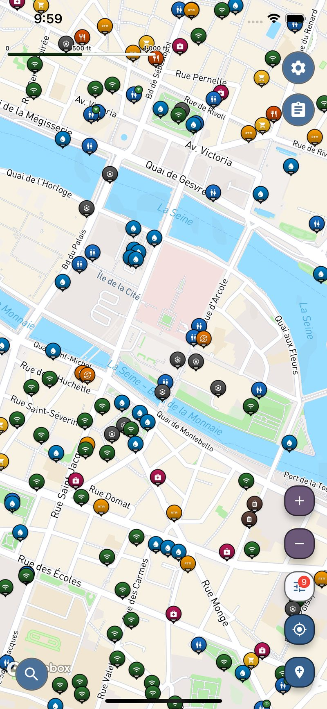
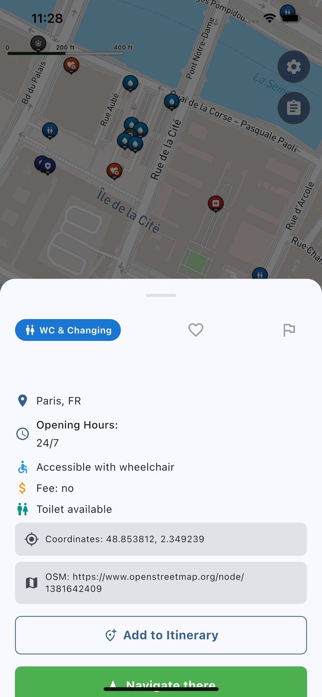
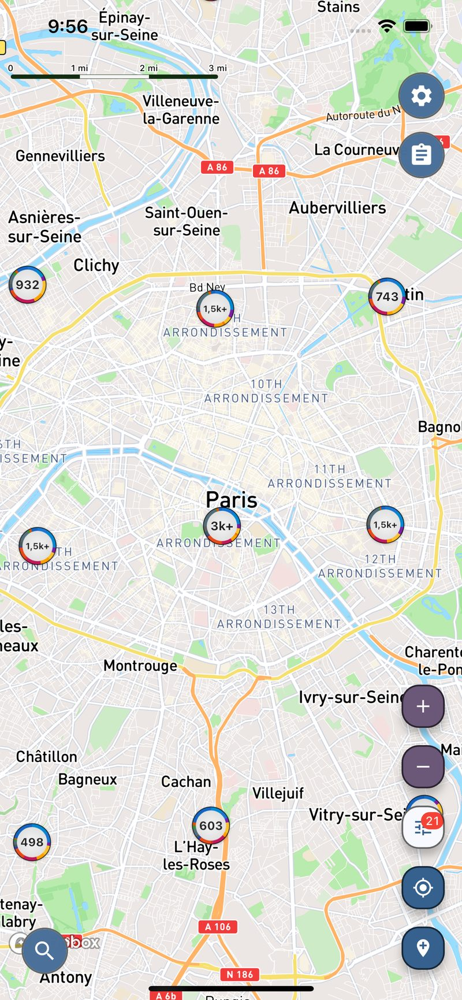
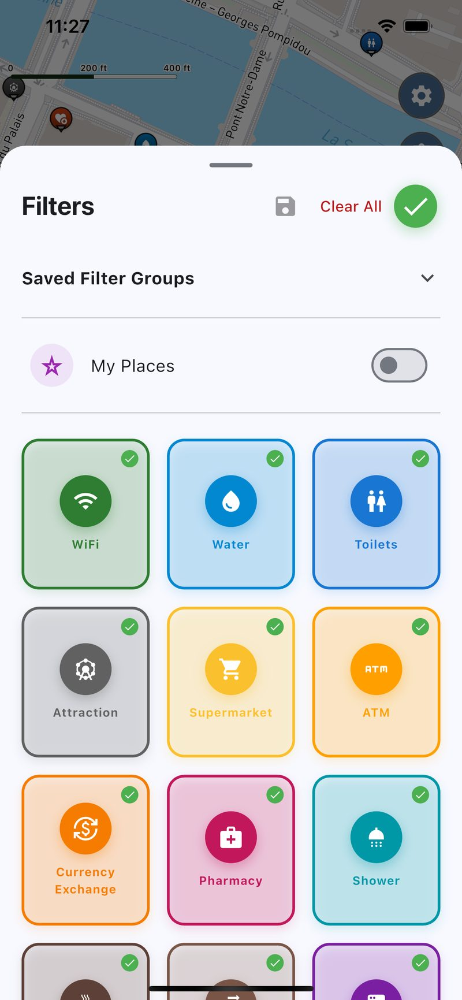
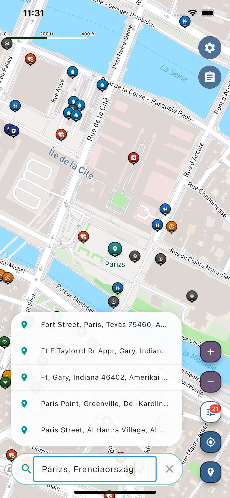
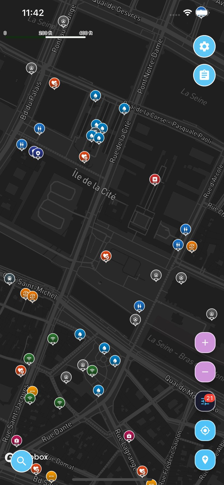

Encontre banheiros, água, chuveiros e Wi-Fi – onde quer que você viaje.
O Voyager Maps te ajuda a encontrar os lugares que você realmente precisa durante uma viagem — banheiros, água potável, Wi-Fi, lavanderias —, principalmente quando você está em um lugar desconhecido.
Gratuito · iOS e Android
5,5 milhões de locais úteis · 237 países · grátis

Por que não usar simplesmente o Google Maps?
O Google Maps é ótimo pra navegação. Mas quando se trata de recursos comunitários gratuitos — banheiros, torneiras de água, chuveiros —, ele apresenta resultados mistos. O Voyager Maps foi criado exatamente pra esses momentos.
Exemplo baseado em Paris, França (julho de 2026): os números do Voyager Maps foram contabilizados em nosso banco de dados; os números do Google Maps vieram de uma busca manual pela mesma categoria.
Por que o Voyager Maps foi criado
A maioria dos apps de mapas se concentra em te levar a algum lugar. O Voyager Maps se concentra no que você precisa quando chega lá — uma maneira rápida de encontrar os lugares úteis que fazem a viagem dar certo.
Os viajantes se deparam com situações como essas o tempo todo:
- Você chega em uma cidade nova e precisa encontrar um banheiro ou Wi-Fi rapidinho.
- Você tá dirigindo no calor e só precisa encher sua garrafa de água.
- Você está viajando há dias e precisa de uma lavanderia ou de um chuveiro.
- Você tá num lugar desconhecido e só quer saber dos poucos lugares que realmente importam.
Com filtros e grupos de categorias, você vê só os lugares que te interessam, sem resultados irrelevantes atrapalhando.
Feito pra situações reais de viagem
Encontre água potável e banheiros com mais facilidade, sem precisar sair do seu trajeto.
Cuide das suas necessidades do dia a dia de forma simples, sem resultados irrelevantes ou buscas demoradas.
Resolva rapidamente suas necessidades práticas, onde quer que você esteja — sem ter que ficar adivinhando.
Planeja sua viagem pensando na água potável de graça, em vez de gastar dinheiro com garrafas.
O que você pode encontrar em todo o mundo
- Banheiros520 mil
- Água potável459 mil
- Vagas de estacionamento1,2M
- Guarda-volumes1,8k
- Acampamentos e chuveiros228 mil
- Supermercados493 mil
- Dinheiro e câmbio261 mil
- Farmácias437 mil
- Saúde e emergências544 mil
- Atrações248k
- Mais pontos de parada úteis1,1M
O Wi-Fi não é uma categoria separada — 389 mil desses lugares oferecem Wi-Fi gratuito ou exclusivo para clientes, e você pode filtrar por esse critério em todos eles.
Categorias úteis de viagem que as pessoas realmente procuram quando estão na rua.
É mais do que só achar a próxima parada
Os lugares que você encontrar podem virar um plano que você guarda, compartilha e calcula os custos — a parte que um app de mapas comum deixa por sua conta.
Salve os lugares que você encontrar como paradas, na ordem em que vai visitá-los, com horários e anotações.
Manda um link ou adiciona seus companheiros de viagem pra que todo mundo siga o mesmo plano.
Coloca um custo estimado em qualquer parada e vê o total por moeda — útil quando a viagem passa por vários países.
Marque qualquer lugar como favorito e ele ficará a um toque de distância, tanto nessa viagem quanto na próxima.
Experiência simples, decisões rápidas
O Voyager Maps usa uma interface de mapa simples e categorias de viagem bem definidas, pra que você possa dar uma olhada rápida nas opções por perto e escolher sua próxima parada com confiança.





Todos os lugares úteis que você precisa — onde quer que você vá.
Instala o Voyager Maps e encontra o que precisas mais rápido, não importa aonde sua viagem te leve.
Perguntas frequentes
Sim, o Voyager Maps é totalmente gratuito tanto no iOS quanto no Android. Não tem assinaturas nem compras dentro do app.
O Voyager Maps tem mais de 5,5 milhões de locais úteis em todo o mundo, incluindo banheiros públicos, torneiras de água potável, chuveiros gratuitos, pontos de Wi-Fi, lavanderias, estacionamentos e muito mais.
O Voyager Maps é um aplicativo útil para viagens que te ajuda a encontrar lugares práticos enquanto você está na estrada — banheiros, água potável de graça, chuveiros, lavanderias e Wi-Fi. Ele foi feito pra viajantes, quem faz viagens de carro, mochileiros, quem mora em van e ciclistas.
O Google Maps é ótimo pra navegação e restaurantes. O Voyager Maps foca exclusivamente nas necessidades práticas de viagem: banheiros públicos, água potável de graça, chuveiros, lavanderias e estacionamento. Ele mostra muito mais locais nessas categorias — em Paris, por exemplo, listamos 289 pontos de abastecimento de água potável, contra cerca de 20 encontrados no Google Maps.